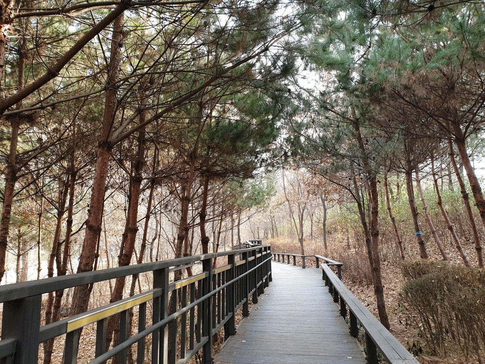

이름
고덕산 무장애자락길
소재지
서울특별시 강동구 고덕동 296
설명
고덕동에 위치한 약 700m 길이의 순환형 숲길.
이 자락길은 평평하고 경사가 없어 휠체어를 이용하거나
잘 걷지 못하는 어린 자녀, 임산부 등도 큰 불편함 없이
자연을 느낄 수 있도록 길이 잘 마련되어 있다.
대중교통
버스 : 342, 3411, 3413 등
지하철 : 5호선 고덕역 3번 출구